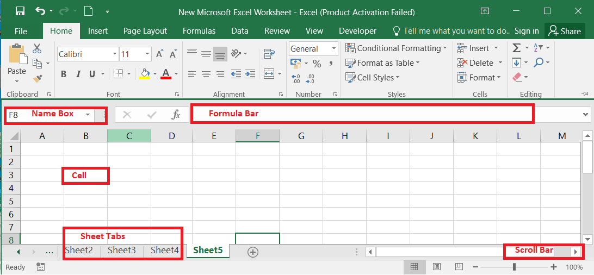
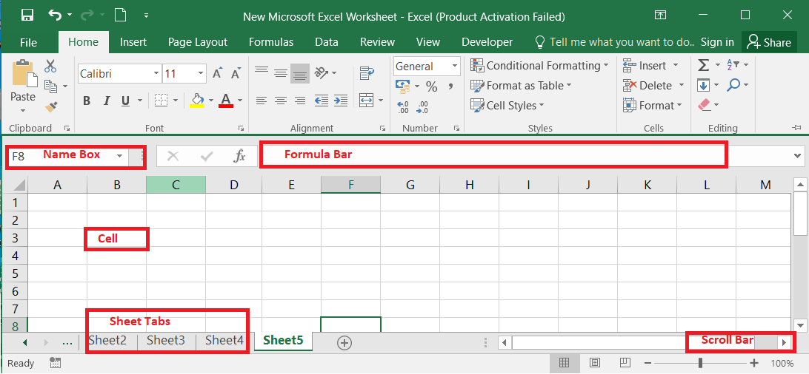

Microsoft Excel म्हणजे काय?
Microsoft Excel हे एक प्रगत स्प्रेडशीट सॉफ्टवेअर आहे, ज्याचा वापर डेटा व्यवस्थापन, विश्लेषण आणि गणनांसाठी केला जातो. Excel च्या मदतीने वापरकर्ते विविध प्रकारचे डेटा टेबल्स तयार करू शकतात, ग्राफ्स बनवू शकतात, आणि जटिल गणनांसाठी फॉर्मुलांचा वापर करू शकतात.
हे सॉफ्टवेअर व्यवसायिक, शैक्षणिक आणि वैयक्तिक वापरासाठी अत्यंत उपयुक्त आहे, जसे की बजेट तयार करणे, डेटा विश्लेषण करणे, आणि रिपोर्ट्स तयार करणे.
Microsoft Excel कसे वापरायचे?
1. Excel उघडणे
- अॅप शोधा: आपल्या संगणकाच्या Start बटनावर क्लिक करा, "Microsoft Excel" टाइप करा, आणि Excel चा आयकॉन निवडा.
- नवीन स्प्रेडशीट: Excel उघडल्यानंतर, "Blank Workbook" निवडा.
2. इंटरफेस समजून घेणे
- टायटल बार: वरच्या बाजूस स्प्रेडशीटचे नाव दिसते.
- रिबन: विविध टॅब (Home, Insert, Page Layout इ.) द्वारे फॉरमॅटिंगचे साधन.
- सेल: तुमचा डेटा टाकण्याचे ठिकाण म्हणजे प्रत्येक बॉक्स.
3. डेटा टाकणे
- सेलवर क्लिक करा: इच्छित सेलवर क्लिक करा आणि डेटा टाइप करा.
- नवीन ओळीसाठी Enter की वापरा.
4. फाइल सेव्ह करणे
- File वर क्लिक करा: "File" टॅबवर क्लिक करा.
- Save As निवडा: फाइल कुठे सेव्ह करायचं ठरवा.
- फाइलचं नाव द्या: नाव लिहा आणि "Save" वर क्लिक करा.
5. डेटा फॉरमॅट करणे
- सेल हायलाइट करा: फॉरमॅट करायचा सेल निवडा.
- फॉरमॅटिंग पर्याय: "Home" टॅबमध्ये फॉन्ट, रंग, आणि स्टाइल पर्याय वापरा.
6. चार्ट तयार करणे
- डेटा निवडा: चार्टसाठी डेटा निवडा.
- Insert टॅबला जा: "Insert" टॅबवर क्लिक करा.
- Chart निवडा: "Charts" विभागात तुमच्या आवश्यकतेनुसार चार्ट प्रकार निवडा.
Micorsoft Excel छायाचित्रे

 

Micorsoft Excel व्हिडिओ मार्गदर्शन
Microsoft Excel चे फायदे
- डेटा व्यवस्थापनासाठी प्रभावी साधन.
- अनेक फॉरमॅटिंग आणि गणना पर्याय.
- संपूर्ण जगभरात वापरले जाते.
- स्प्रेडशीट्स तयार करणे सोपे.
- डेटा विश्लेषणासाठी शक्तिशाली साधने.
सामान्य विचारले जाणारे प्रश्न
1. Microsoft Excel मध्ये फाइल कशी जतन करावी?
फाइल जतन करण्यासाठी, "File" टॅबवर क्लिक करा, "Save As" निवडा, आणि तुमच्या इच्छित स्थानावर फाइल नावाने जतन करा.
2. Excel मध्ये डेटा कसा विश्लेषित करावा?
डेटा विश्लेषित करण्यासाठी, आवश्यक डेटा निवडा आणि विविध विश्लेषण साधने जसे की पिव्होट टेबल, चार्ट्स, आणि फॉरमुला वापरा.
3. Microsoft Excel चा वापर कोणत्याही डिव्हाइसवर केला जाऊ शकतो का?
होय, Microsoft Excel वेब आवृत्ती आणि मोबाइल अॅप्स उपलब्ध आहेत, त्यामुळे तुम्ही कोणत्याही डिव्हाइसवर Excel वापरू शकता.